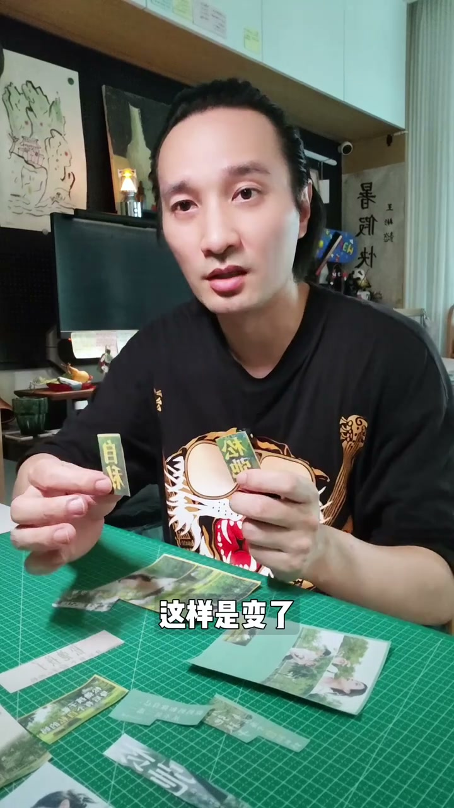
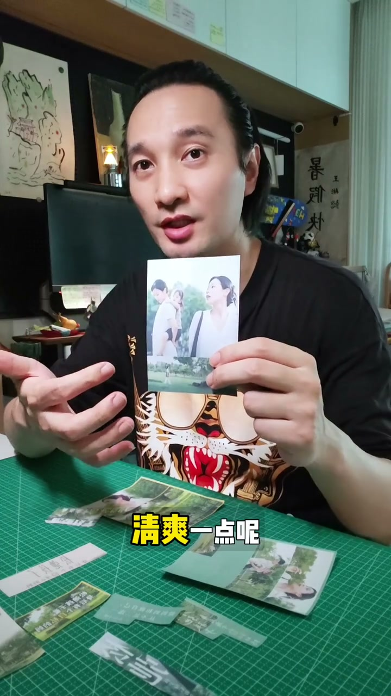
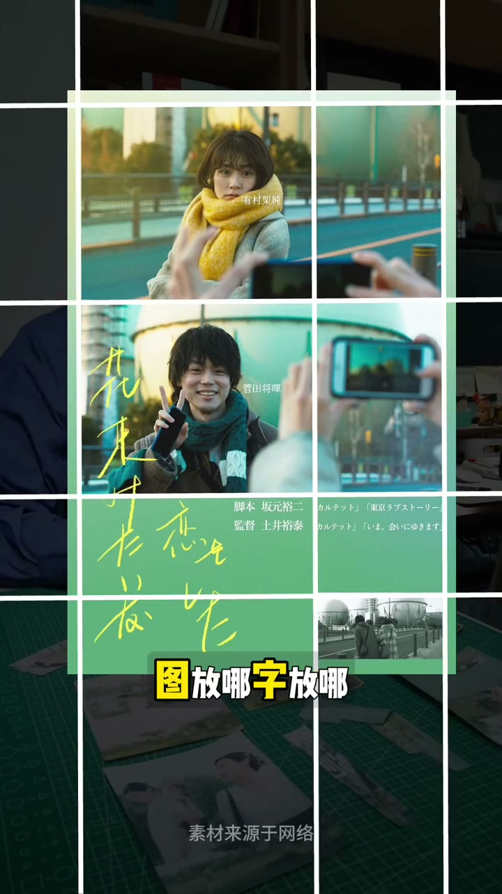
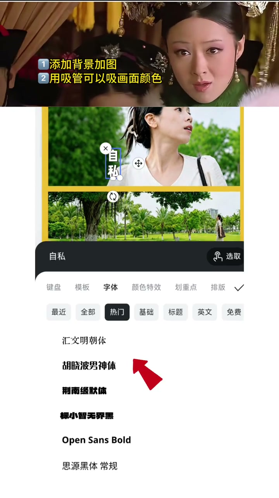
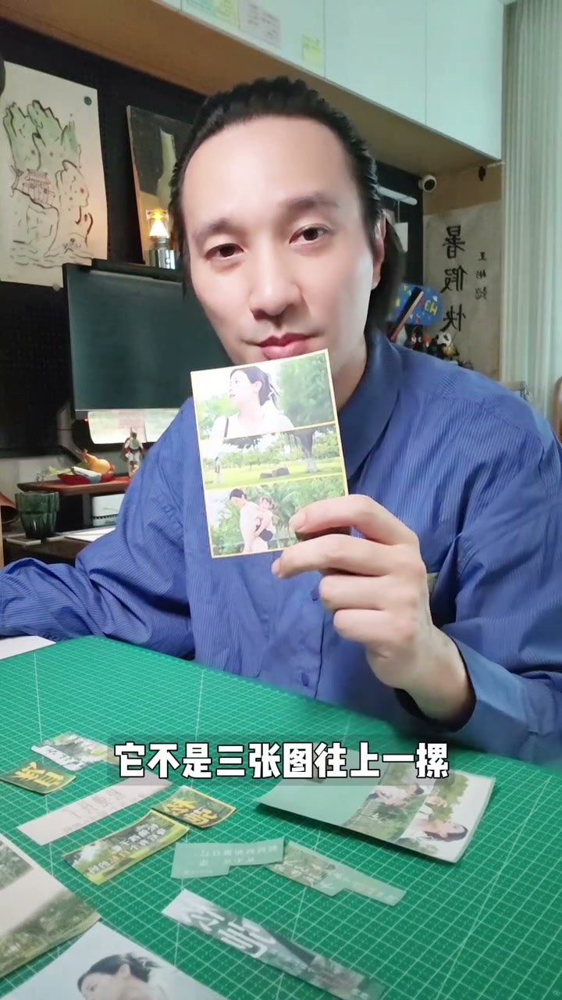

内容要点
[00:00] 你看这三张图都挺好看的
[00:01] 但加上字总觉得哪里怪怪的
[00:03] 我先不换图
[00:04] 只把字改大
[00:05] 是不是一下就好看了
[00:06] 这样是变了
[00:07] 但我想更有王感一点
[00:08] 那就用某格重一分
[00:10] 图还是这几张
[00:11] 只是谁大谁小
[00:12] 就有了安排
[00:13] 但我不想画面太满清爽一点的
[00:15] 那就把下面揉出来
[00:16] 图推到角落
[00:17] 字方的空白里
[00:18] 这样画面没那么挤
[00:19] 文字也不用到处搞位置了
[00:21] 这个好
[00:21] 那如果我想要再更有电影感
[00:24] 或者像一个完整的海报呢
[00:25] 那就打破网格再拉开一点
[00:27] 上面放画面下面做氛围
[00:29] 好看的海报其实都在用
[00:30] 网格分清楚
[00:31] 图方哪儿 字方哪儿
[00:33] 谁先被看见
[00:36] 哪一种简单呢
[00:37] 走开让本宫来保定设计
[00:39] 先选择一个简单的黄色背景
[00:41] 然后家图调整一下位置大小
[00:44] 选择一个免费的字体
[00:46] 聪明的你用吸管吸一下
[00:48] 就同样的黄色字了
[00:50] 此时的你强的可怕
[00:51] 复制了一下文字
[00:53] 但白色字有点看不清
[00:55] 聪明的你非常聪明
[00:56] 加个黑色头影
[00:57] 评价关键词单独拎出来
[01:01] 太棒了
[01:02] 让我们一起看看
[01:09] 所以三屏封面
[01:10] 它不是三张图
[01:10] 往上一裸啊
[01:11] 是先用网格分清楚
[01:13] 图方哪儿 字方哪儿
[01:14] 谁先被看见
[01:15] 这四种固图卡
[01:16] 我已经准备好了
[01:17] 下次做封面的时候直接用







